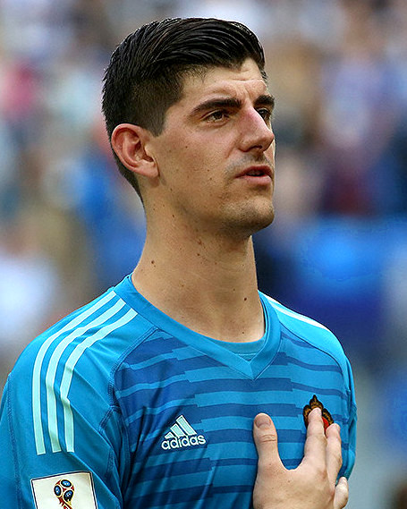
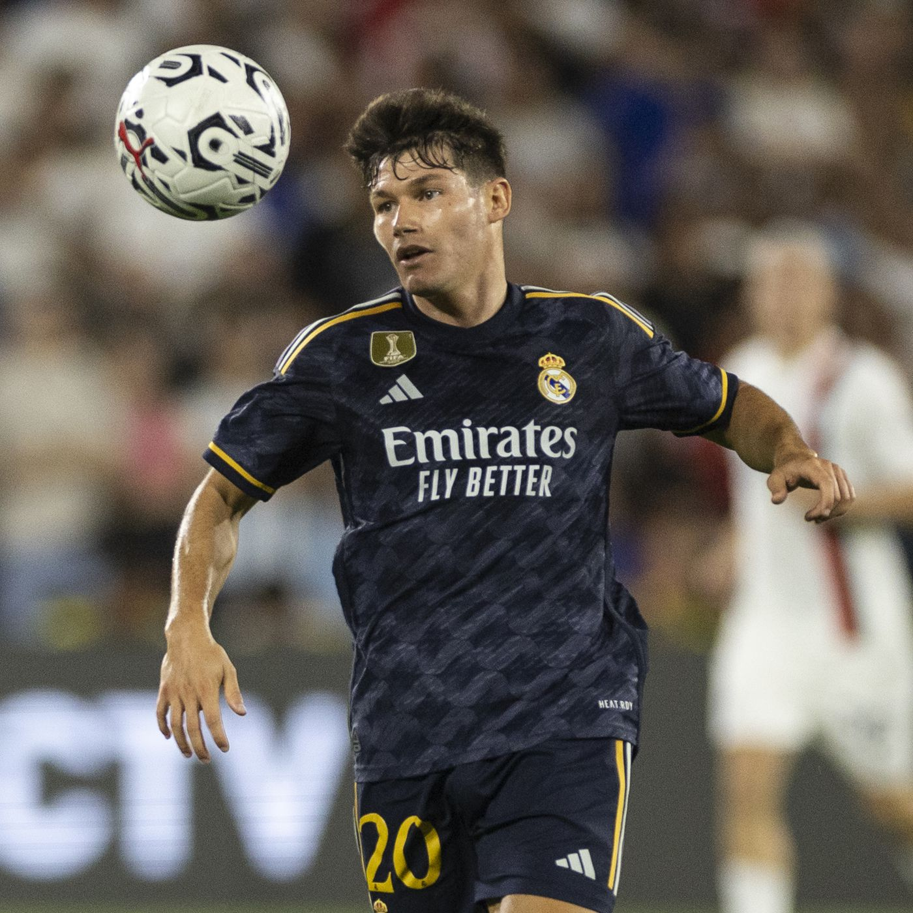

1 : G Thibaut Courtois 11/05/1992 (31 ans) Belgique Chelsea FC 2018-2026
13 G Andriy Lunin 11/02/1999 (24 ans) Ukraine Zorya Louhansk 2018-2024
25 G Kepa Arrizabalaga 03/10/1994 (29 ans) Espagne Chelsea FC 2023-2024
2 / Def Dani Carvajal 11/01/1992 (31 ans) Espagne Bayer Leverkusen 2013-2025
3/ Def Éder Militão 18/01/1998 (25 ans) Brésil FC Porto 2019-2025
4 /Def David Alaba 24/06/1992 (31 ans) Autriche Bayern Munich 2021-2026
6 /Def Nacho Capitaine 18/01/1990 (33 ans) Espagne Formé au club 2013-2024
17 /Def Lucas Vázquez 01/07/1991 (32 ans) Espagne Espanyol Barcelone 2015-2024
20 /Def Fran García 14/08/1999 (24 ans) Espagne espoirs Rayo Vallecano 2023-2027
22 /Def Antonio Rüdiger 03/03/1993 (30 ans) Allemagne Chelsea FC 2022-2026
23 /Def Ferland Mendy 08/06/1995 (28 ans) France Olympique Lyonnais 2019-2025
5 /Mil Jude Bellingham 29/06/2003 (20 ans) Angleterre Borussia Dortmund 2023-2029
8 /Mil Toni Kroos 04/01/1990 (33 ans) Allemagne Bayern Munich 2014-2024

10 /Mil Luka Modrić 09/09/1985 (38 ans) Croatie Tottenham Hotspur 2012-2024
12 /Mil Eduardo Camavinga 10/11/2002 (21 ans) France Stade rennais FC 2021-2027

15 /Mil Federico Valverde 22/07/1998 (25 ans) Uruguay CA Peñarol 2018-2027

22/Mil Dani Ceballos 07/08/1996 (27 ans) Espagne Real Betis 2017-2027
21 /Mil Brahim Díaz 03/08/1999 (24 ans) Espagne → AC Milan 2023-2027
24 /Mil Arda Güler 25/02/2005 (18 ans) Turquie Fenerbahçe SK 2023-2029

7 /ATT Vinícius Júnior 12/07/2000 (23 ans) Brésil CR Flamengo 2018-2023
11 /ATT Rodrygo 09/01/2001 (22 ans) Brésil Santos FC 2019-2025
14 /ATT Joselu 27/03/1990 (33 ans) Espagne RCD Espanyol 2023-2024